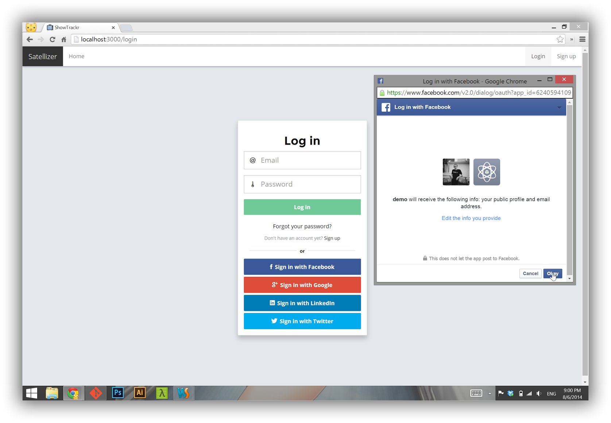
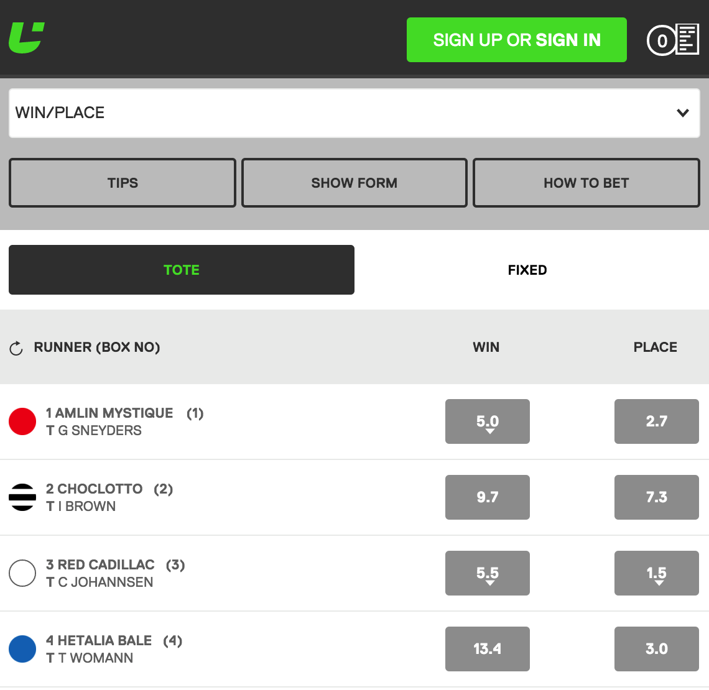
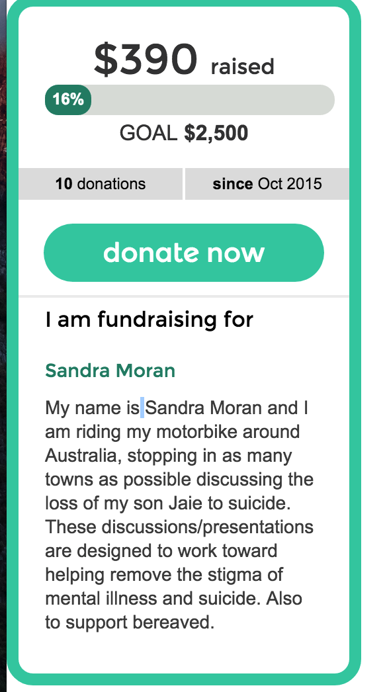

Chaplin Wang
B.S University of New South Wales
Computer Science
Artificial Intelligence, Robotics, Computer Vision
2013 - 2014 Clarity Graduate Developer
2014 - 2015 goXpro Software Engineer
2015 - Fairfax Media Java Developer
Overall Strategies and Roadmaps for Radio
Platform Stability
Mobile First and User Engagement
Product Delivery: introduce Agile Methodology< to Radio/span> Shorter loop, faster response, keep cost down
Some features & ideas I would like to discuss:
O-Auth login to Enhanced Social Media, and enabling user comments and radio sharing
Real-time survey and voting
Betting online during Racing/NRL/AFL Radio Show
Online Tipping and donation/fund raising
Online Tipping and donation/fund raising
Voice recognize commenting and chat

*Solid dev experience, building web and mobile app from scratch
*Familiar with current radio site implementation
*Self organised and quickly get things done
Cons:
*Have not worked in management roles before
I am very excited about the opportunity and the growth space for radio online
Thats why I am here
Thank you